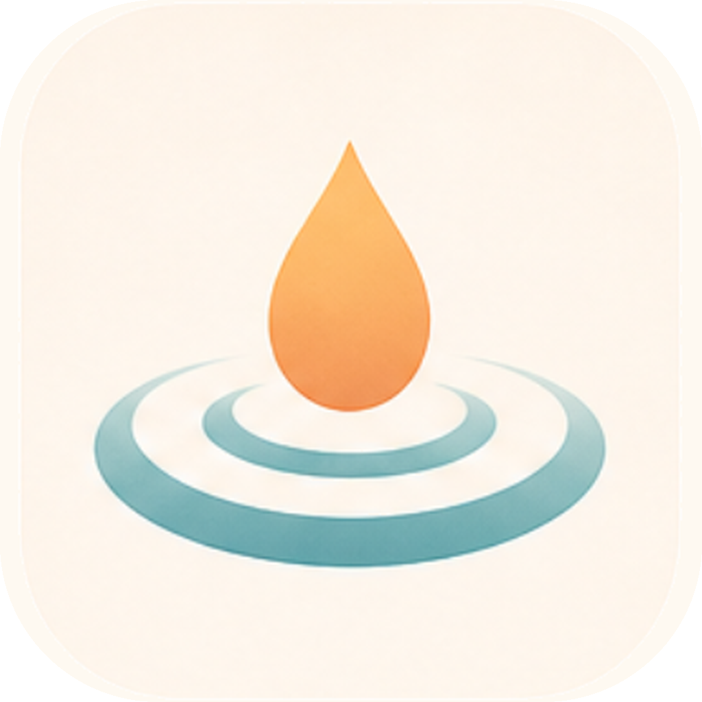
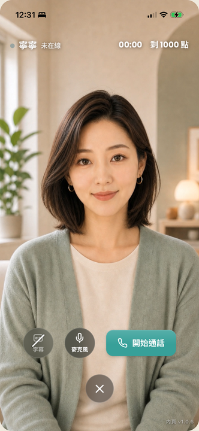
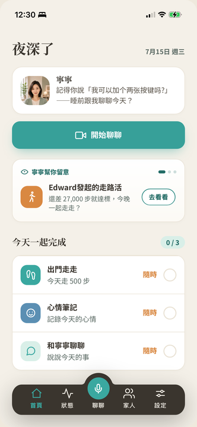
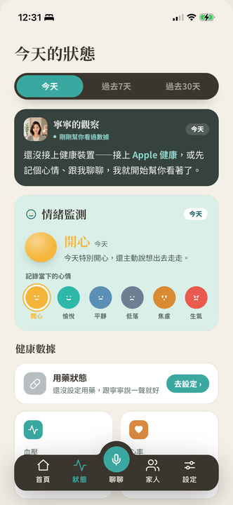
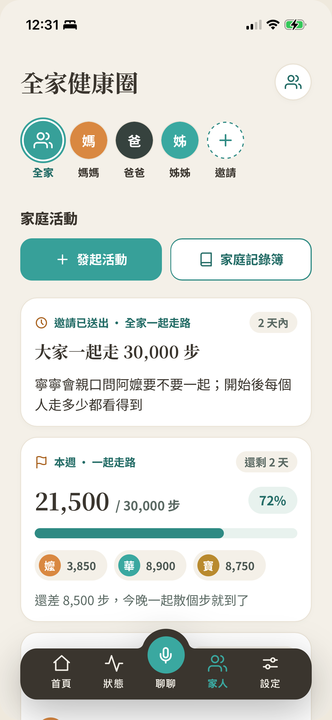

Munea 沐寧數位發展部數位產業署 DIGITAL+ 數位創新補助平台
115 年度 AI 創新服務研發補助計畫 · 審查會議簡報

iOS 產品原型（Prototype）自籌開發中：真人臉即時語音對話、長期記憶、家庭圈等核心設計已可操作驗證，醫療安全紅線測試 13 題全數通過。本計畫是把這個原型「開發到正式上線、導入場域」。
四個標的：多平台 App 開發（iOS 完善＋Android 新開發、多語系）、營運後台（席次管理＋關懷報告）、AI 照護智慧深化、場域驗證導入。前期自籌成果不列入補助標的，界線乾淨。
危機偵測轉介安全網（113／119／1925）、醫療紅線、個資高標保護是產品地基、不是事後補丁——正好站在國際監管收緊的正確一側。
台灣 65 歲以上人口占比，114 年 12 月正式邁入超高齡社會
內政部，2025
65 歲以上一人戶（獨居）；政府列冊關懷僅約 5.5 萬人
內政部 114 年統計通報
2028 年長照人力缺口推估；87.5% 機構長期缺工
報導者／1111 調查，2025
全球 AI 銀髮照護市場年複合成長率；「陪伴」是成長最快子類
InsightAce Analytic，2026
子女遠距擔憂、長者不主動用科技；要的不只是陪伴，是「陪伴＋出事有人接住」。
離峰與夜間陪伴空白、家屬來電稀釋照護人力，需要延伸人力的關懷工具。
員工照顧父母的隱形負擔，缺「可採購、可量化、員工有感」的社會面（S）作為。
2009 年成立、實收資本額 1,500 萬元；AIoT 雲平台與智慧生態解決方案（EMS 能源管理、ESG 碳盤查、智慧樓宇／工廠／醫療）。
ISO 27001（2022 取得）近三年營收 CAGR 約 30%
營業額：112 年 1,597 萬 → 114 年 2,682 萬元——自籌款 222.6 萬具充分支應能力。
10 年以上健康領域產品經驗。主導 HealthBuy 健康飲食 App 從 0 到 1：上線 6 個月逾 10 萬用戶、獲 2020 Google Play 年度最佳應用程式；曾主導健身管 SaaS（30 人跨職能團隊）。
正帶領團隊自研開發 Munea iOS 產品原型（前期自籌、開發中）。
AI 研發（黃聖育、林勇全—曾執行 DIGITAL+ 計畫）· 後端與資安（李守益—資工碩士、王再旺）· UIUX 與多平台（袁震宇、黃郁筑、陳佩珊）· 需求規劃（陳少喬）· 測試（鄭郁潔、蔡雅歌）· 場域驗證（蔡盛全—創辦人親自主持對外導入）。
真人臉即時語音視訊對話（可插話、嘴型對聲音）· 六款陪伴角色 · 長期記憶與情境感知 · 用藥回診提醒 · Apple 健康串接 · 家庭照護圈 · 訂閱與點數金流。
醫療紅線測試 13／13 全數通過（不診斷、不判讀檢查、不調整用藥）；帳號多租戶隔離、越權防護、帳號真刪（被遺忘權）均通過自動化測試與雲端端對端驗證。



產品 UI 設計原型（Prototype）畫面 · 開發調整中（左起：首頁、狀態、家人）
| 申請標的 | 現況（AS-IS） | 計畫完成（TO-BE，115/11） |
|---|---|---|
| ① 多平台 App 開發 （iOS 完善＋Android 新開發） |
iOS 產品原型調整中；Android 未開發 | iOS 完善至正式上線＋Android 版新開發——雙平台正式上線、多語系介面與語音（繁體中文、台語為先），擴大長者可觸及裝置 |
| ② 營運後台 | 僅有規劃文件、零程式產出 | 席次管理（組織帳號／配發開通／用量報表／月結）＋關懷報告與異常通知，支撐 B2B2C 商業模式 |
| ③ AI 照護智慧深化 | 守護腦文字線紅線通過；記憶感知有骨架 | 心理支持約束層（CBT／ACT／MI）上線、記憶情境感知強化、安全守護規則深化 |
| ④ 場域驗證與導入 | 企業／健康中心客戶 0 家 | 健康中心＋ESG 企業試辦導入 2–3 家（含付費意向書）；App 通過第三方資安檢測 |
低延遲即時語音對話、可被打斷；台灣繁體與台語原生。
Gemini Live
長期記憶萃取、情境感知整合、每日簡報與照護摘要。
Claude Sonnet
決定論規則引擎為主：危機語言辨識、風險分級、醫療邊界守門、決策留痕可稽核。
規則引擎＋AI 分類輔助
六款角色同一組記憶「語氣不同、事實一致」；調度層負責回應優先權仲裁——安全 > 即時對話 > 背景管家。每顆腦獨立輸入輸出合約、供應商可替換不影響其他層。
最終回應 ＝ 角色人格 ＋ 使用者記憶 ＋ 即時感知 ＋ 當下對話 ＋ 安全規則
雙層危機防護、風險分級轉介 113／119／1925；醫療紅線 13/13（不診斷、不判讀、不調整用藥）；保護事件不自動通知家庭（避免加害人即家人）。
明示 AI 生成「不是真人、不是家人」、不冒充真實人物；危機告警全程留痕、模型版本管理、人工申訴通道——判斷可回溯、責任可釐清。
資料最小化、原始對話限期自動刪除、AI 服務層 zero-retention 合約；企業席次三原則——企業僅取匿名彙總、健康內容只給家屬、席次僅作計費。
TLS 1.3、多租戶隔離、帳號真刪已通過驗證；App 公開上架前通過政府認可第三方檢測（結案查核項）；資安經費 36.5 萬元（8.20%）超過 7% 門檻；AI 服務均美系供應商、資料不經中國。
B2B：企業席次月訂閱（參考價 NT$300–500／人・月）＋一次性導入服務費；C 端：訂閱＋點數（機制已建於 App 內）。國際先例：Calm for Business、Headspace for Work。
指標事先議定（通話完成率、家屬滿意度、異常回報準確度）→ 達標轉正式、價格事先寫定、未達標無責結束——把場域決策門檻降到最低。
住宿機構品質獎勵（智慧照顧科技指標）· 長照 3.0 輔具租賃（規劃申請）· 台灣雲市集上架——降低場域與家庭導入門檻。
長輩用的是同一支 App、公司管的是同一套營運後台；差別只在付費者是子女（C 端訂閱）或企業／機構（席次月訂閱、後台開通綁定）。席次模組化設計＝標準化產品、非一案一製客製，導入一家新機構只需後台開通、約 1–2 週。競爭定位：國際方案綁硬體與外語、本土業者聚焦機構後台不做家庭陪伴——「純軟體＋繁中台語＋安全網＋雙通路」目前市場沒有直接等價品。
| 工作項（權重） | 115/07 | 08 | 09 | 10 | 11 |
|---|---|---|---|---|---|
| A1 心理支持約束層（11%） | A1 | A2 | |||
| A2 記憶情境感知與安全守護深化（11%） | A3 | A4 | |||
| B 多平台開發：Android 新開發／iOS 優化／UIUX（30%） | B1 | B2 | |||
| C 營運後台：席次管理／關懷報告與異常通知（26%） | C1 | C2 | |||
| D 資安與品質驗證：QA／第三方檢測（12%） | D1 | D2 | |||
| E 場域驗證與導入：健康中心＋ESG（10%） | E1 | E2 | |||
| 進度百分比（依經費執行比例） | — | — | 60% | — | 100% |
計畫期間 115/06/25–115/11/16；6/25–6/30 為啟動準備期、未編列經費。金色圓標為驗收查核點（共 12 個）：8 月 5 個階段驗收、10 月 1 個、11 月 6 個結案驗收，內容與計畫書「預定查核點說明」一致。
| 科目 | 金額（千元） | 占比 |
|---|---|---|
| 研發人事費（12 人 53.16 人月） | 3,375 | 76% |
| 研發設備使用費（AI 工具／雲端） | 496 | 11% |
| 驗證費（App 第三方資安檢測） | 200 | 4% |
| 創新服務推廣費（參展／廣告） | 380 | 9% |
補助款 2,225 千元、自籌款 2,226 千元（50:50），各科目均對半分攤。
✓ iOS＋Android 正式上線、營運後台上線
✓ 試辦導入 2–3 家（含付費意向書）
✓ 成果使用者 ≥600 人
✓ App 第三方資安檢測通過
✓ 計畫產出 ≥4 項、技術推廣活動 ≥2 場
產值 220 萬 → 750 萬元；企業客戶 5 → 14 家；使用者 2,000 → 8,000 人次；新增就業 2 → 4 人、研發人才培育 12 → 16 人。
為什麼是我們——iOS 產品原型自籌開發中、安全紅線通過驗證，團隊有從 0 到 1 的上線實績。
為什麼是現在——超高齡元年、政策窗口大開、國際監管把安全網變成門檻。
補助的意義——把驗證過的原型，在 115/11/16 前推進到雙平台正式上線與企業場域導入。
敬請委員指教 · 嘉瑪科技股份有限公司 · 計畫主持人 曾宇晞
3.5 個月完成四項標的的依據
使用外部模型，創新在哪裡
首次獨立研發專案的能力證明
意向書、試辦洽談現況
危機誤判、幻覺、個資定性
補助結束後的營運與擴散
後端 API、AI 調度層、六角色、金流、家庭圈皆為 iOS 版既有共用資產；Android 版重用同一套後端與設計系統，非重寫全系統。營運後台為獨立新開發、與 App 線並行不互卡。
① 五分項專責固定、12 個查核點分三波收斂（8 月即有 5 個階段驗收）；② 後台採席次管理先行、關懷報告次之，範疇可依優先級調整；③ 人力雙軌配置（後端、測試皆雙人力互為備援）。
基礎模型能力：即時語音（Gemini Live）、語意理解（Claude Sonnet）。每顆腦獨立輸入輸出合約，任一供應商可替換、不影響整體架構——這正是「標準化架構」的設計目的。
指揮調度層（優先權仲裁）· 角色人格層（六角色結構化定義）· 守護腦危機分級與轉介規則庫 · 記憶重要性判讀與情境感知參數 · 醫療紅線與心理支持約束層——以軟體著作權＋營業秘密管理。
公司過往自主研發（IoT 雲平台、AIoT 模型、Munea 前期開發）以營運資金支應、未於財報單獨列示研發費用科目。本計畫正是公司首次以獨立研發專案規範化管理——這是治理升級，不是能力空白。
① Munea iOS 產品原型由本團隊自研開發中、核心可展示（簡報第 5 頁即原型畫面）；② 主持人 HealthBuy 從 0 到 1、Google Play 年度最佳應用；③ 公司 AIoT／智慧醫療系統整合實績與 ISO 27001 制度基礎。
C 端依計畫於期程內完善至正式上線、隨即累積真實使用與付費數據；B 端由創辦人蔡盛全親自主責，鎖定長照中心／日照／養生村／健康中心／ESG 企業洽談，目標計畫期間完成 2–3 家意向書用印。
14 天免費試辦、指標事先議定、未達標無責結束、達標轉正式價格事先寫定；標準導入免費（線上訓練＋後台開通）、機構用既有裝置零硬體採購。10 月台北國際照顧博覽會參展直接接觸採購決策者。
雙閘門：規則詞庫先行、AI 語意判定接住委婉與拐彎訊號；服務定位為「多一層守護」、明示不取代緊急救援與醫療。
風險分級——關懷級由角色接住、危急級才轉介通知；告警記錄觸發訊號與分級，供誤報校準；人工申訴通道納入改善循環。
不診斷、不判讀檢查、不調整用藥，一律導回醫師；自行量測生理數據依函釋方向非特種個資，仍比照特種個資高標保護。
企業席次月訂閱為經常性收入（企業直接付款、毛利結構健康）；C 端訂閱＋點數制把最大變動成本（即時視訊）與收入綁定。結案後目標：N+1 產值 220 萬 → N+3 750 萬元、企業客戶 14 家。
結案後逐年新增就業 2／3／4 人、研發人才培育 12→16 人；技術推廣活動與產業說明會逐年辦理；協助中小型長照機構低門檻數位轉型，建立台灣本土陪伴服務品類標準。